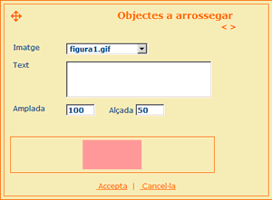
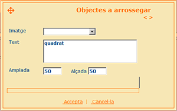

| orígens PREGUNTA D'ARROSSEGAR |
|
Com funciona? La llista d'orígens conté tots els objectes que es poden arrossegar. Per afegir, modificar o eliminar un objecte arrossegable es poden fer servir els botons que apareixen sota aquesta llista. La pantalla que es carrega en aquest moment permet editar l'objecte a arrossegar seleccionat. Els paràmetres que es poden configurar per cada objecte són els següents:
|
|
Exemple A continuació es mostra un exemple de com afegir una imatge com objecte a arrossegar.  Un altre exemple de com afegir text com objecte a arrossegar.  |